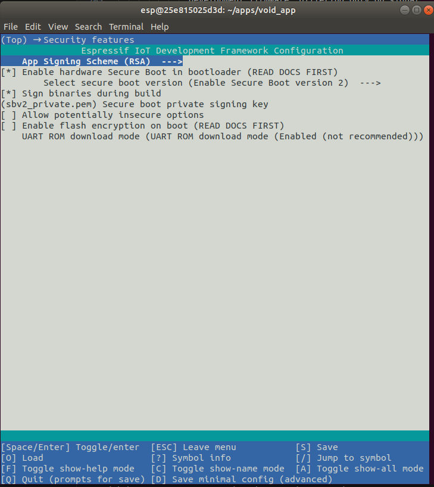
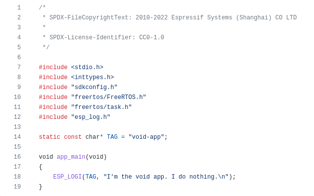

[Error-prone] Turn on SBV2 and other hardware security features by
manually computing and blowing efuse bits using espefuse.py.
[Recommended] Sign a bootloader and app image bundle with the
desired private key, and flash the signed images and a valid
partition table to an unfused device. On first boot, efuse will be
blown (by IDF bootloader) to enable SBV2
Once SBV2 is enabled, only signed images can boot on device
Firmware Signing
SBV2 enablement is largely a firmware signing and key management
problem
Development signing: Signing key confidentiality is not
crucial; signing process should be easy to allow fast feedback
loop
Production signing: Signing key is highly confidential, and
shall not be exposed; signing process should be easy to allow fast
releases
Production firmware should be a nearly faithful mirror of
development firmware, differing only on public keys and
signatures
FW Signing in Development
Steps:
Generate file-based private signing key using OpenSSL or
espsecure.py
Use `menuconfig` to enable SBV2, configure signing key file,
and save "sdkconfig"
Use `idf.py build` to build and sign a void app with
the saved "sdkconfig"
Development signing keys aren't usually security critical, and it's
often OK to check them into a version control system for easy
access and backup
"idf.py menuconfig"

We also recommend to disable JTAG but enable secure ROM download
mode (when available)
The "void app"
An app that does not do anything (and thus is "void"), but can be
flashed on an ESP32 chip to blow security related efuses according
to the "sdkconfig" settings.
A minimum "fuseblower" void app is important for production signing.

SBV2 Signing "1-click" Setup
Thistle released developer tools including Dockerfiles, utility
apps and pre-built Docker images to allow 1-click firmware signing
in development https://github.com/thistletech/esp32-devenvs